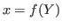
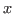
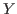

Next: Auxiliary variables, Previous: Parameter initialization, Up: The Model file [Contents][Index]
The model is declared inside a model block:
Description
The equations of the model are written in a block delimited by
model and end keywords.
There must be as many equations as there are endogenous variables in the
model, except when computing the unconstrained optimal policy with
ramsey_model, ramsey_policy or discretionary_policy.
The syntax of equations must follow the conventions for MODEL_EXPRESSION as described in Expressions. Each equation must be terminated by a semicolon (‘;’). A normal equation looks like:
MODEL_EXPRESSION = MODEL_EXPRESSION;
When the equations are written in homogenous form, it is possible to omit the ‘=0’ part and write only the left hand side of the equation. A homogenous equation looks like:
MODEL_EXPRESSION;
Inside the model block, Dynare allows the creation of model-local
variables, which constitute a simple way to share a common expression
between several equations. The syntax consists of a pound sign
(#) followed by the name of the new model local variable (which
must not be declared as in Variable declarations), an equal
sign, and the expression for which this new variable will stand. Later
on, every time this variable appears in the model, Dynare will
substitute it by the expression assigned to the variable. Note that the
scope of this variable is restricted to the model block; it cannot be
used outside. A model local variable declaration looks like:
# VARIABLE_NAME = MODEL_EXPRESSION;
It is possible to tag equations written in the model block. A tag can serve
different purposes by allowing the user to attach arbitrary informations to each
equation and to recover them at runtime. For instance, it is possible to name the
equations with a name-tag, using a syntax like:
model;
...
[name = 'Budget constraint']
c + k = k^theta*A;
...
end;
Here, name is the keyword indicating that the tag names the equation. If an equation
of the model is tagged with a name, the resid command
will display the name of the equations (which may be more informative than the
equation numbers) in addition to the equation number. Several tags for one equation can be separated using a comma.
model;
...
[name='Taylor rule',mcp = 'r > -1.94478']
r = rho*r(-1) + (1-rho)*(gpi*Infl+gy*YGap) + e;
...
end;
More information on tags is available on the DynareWiki wiki.
Options
linearDeclares the model as being linear. It spares oneself from having to declare initial values for computing the steady state of a stationary linear model. This option can’t be used with non-linear models, it will NOT trigger linearization of the model.
use_dllInstructs the preprocessor to create dynamic loadable libraries (DLL)
containing the model equations and derivatives, instead of writing those
in M-files. You need a working compilation environment, i.e.
a working mex command (see Compiler installation for more
details). On MATLAB for Windows, you will need to also pass the compiler name at
the command line. Using this option can result in faster simulations or
estimations, at the expense of some initial compilation
time.2
blockPerform the block decomposition of the model, and exploit it in computations (steady-state, deterministic simulation, stochastic simulation with first order approximation and estimation). See Dynare wiki for details on the algorithms used in deterministic simulation and steady-state computation.
bytecodeInstead of M-files, use a bytecode representation of the model, i.e. a binary file containing a compact representation of all the equations.
cutoff = DOUBLEThreshold under which a jacobian element is considered as null during
the model normalization. Only available with option
block. Default: 1e-15
mfs = INTEGERControls the handling of minimum feedback set of endogenous
variables. Only available with option block. Possible values:
0All the endogenous variables are considered as feedback variables (Default).
1The endogenous variables assigned to equation naturally normalized (i.e. of the form  where  does not appear in ) are potentially recursive variables. All the other variables are forced to belong to the set of feedback variables.
2In addition of variables with mfs = 1 the endogenous variables
related to linear equations which could be normalized are potential
recursive variables. All the other variables are forced to belong to
the set of feedback variables.
3In addition of variables with mfs = 2 the endogenous variables
related to non-linear equations which could be normalized are
potential recursive variables. All the other variables are forced to
belong to the set of feedback variables.
no_staticDon’t create the static model file. This can be useful for models which don’t have a steady state.
differentiate_forward_varsdifferentiate_forward_vars = ( VARIABLE_NAME [VARIABLE_NAME …] )Tells Dynare to create a new auxiliary variable for each endogenous
variable that appears with a lead, such that the new variable is the
time differentiate of the original one. More precisely, if the model
contains x(+1), then a variable AUX_DIFF_VAR will be
created such that AUX_DIFF_VAR=x-x(-1), and x(+1) will
be replaced with x+AUX_DIFF_VAR(+1).
The transformation is applied to all endogenous variables with a lead if the option is given without a list of variables. If there is a list, the transformation is restricted to endogenous with a lead that also appear in the list.
This option can useful for some deterministic simulations where convergence is hard to obtain. Bad values for terminal conditions in the case of very persistent dynamics or permanent shocks can hinder correct solutions or any convergence. The new differentiated variables have obvious zero terminal conditions (if the terminal condition is a steady state) and this in many cases helps convergence of simulations.
parallel_local_files = ( FILENAME [, FILENAME]… )Declares a list of extra files that should be transferred to slave nodes when doing a parallel computation (see Parallel Configuration).
Example 1: elementary RBC model
var c k; varexo x; parameters aa alph bet delt gam; model; c = - k + aa*x*k(-1)^alph + (1-delt)*k(-1); c^(-gam) = (aa*alph*x(+1)*k^(alph-1) + 1 - delt)*c(+1)^(-gam)/(1+bet); end;
Example 2: use of model local variables
The following program:
model; # gamma = 1 - 1/sigma; u1 = c1^gamma/gamma; u2 = c2^gamma/gamma; end;
…is formally equivalent to:
model; u1 = c1^(1-1/sigma)/(1-1/sigma); u2 = c2^(1-1/sigma)/(1-1/sigma); end;
Example 3: a linear model
model(linear); x = a*x(-1)+b*y(+1)+e_x; y = d*y(-1)+e_y; end;
Dynare has the ability to output the original list of model equations
to a LaTeX file, using the write_latex_original_model
command, the list of transformed model equations using the
write_latex_dynamic_model command, and the list of static model
equations using the write_latex_static_model command.
Description
This command creates two LaTeX files: one containing the model as defined in the model block and one containing the LaTeX document header information.
If your .mod file is FILENAME.mod, then Dynare will create a file called FILENAME_original.tex, which includes a file called FILENAME_original_content.tex (also created by Dynare) containing the list of all the original model equations.
If LaTeX names were given for variables and parameters (see Variable declarations), then those will be used; otherwise, the plain text names will be used.
Time subscripts (t, t+1, t-1, …) will be
appended to the variable names, as LaTeX subscripts.
Compiling the TeX file requires the following LaTeX packages:
geometry, fullpage, breqn.
Description
This command creates two LaTeX files: one containing the dynamic model and one containing the LaTeX document header information.
If your .mod file is FILENAME.mod, then Dynare will create a file called FILENAME_dynamic.tex, which includes a file called FILENAME_dynamic_content.tex (also created by Dynare) containing the list of all the dynamic model equations.
If LaTeX names were given for variables and parameters (see Variable declarations), then those will be used; otherwise, the plain text names will be used.
Time subscripts (t, t+1, t-1, …) will be
appended to the variable names, as LaTeX subscripts.
Note that the model written in the TeX file will differ from the model declared by the user in the following dimensions:
For the required LaTeX packages, see write_latex_original_model.
Options
write_equation_tagsWrite the equation tags in the LaTeX output. NB: the equation tags will be interpreted with LaTeX markups.
Description
This command creates two LaTeX files: one containing the static model and one containing the LaTeX document header information.
If your .mod file is FILENAME.mod, then Dynare will create a file called FILENAME_static.tex, which includes a file called FILENAME_static_content.tex (also created by Dynare) containing the list of all the steady state model equations.
If LaTeX names were given for variables and parameters (see Variable declarations), then those will be used; otherwise, the plain text names will be used.
Note that the model written in the TeX file will differ from the model declared by the user in the some dimensions (see write_latex_dynamic_model for details).
Also note that this command will not output the contents of the
optional steady_state_model block (see steady_state_model);
it will rather output a static version (i.e. without leads and
lags) of the dynamic model declared in the model block.
For the required LaTeX packages, see write_latex_original_model.
In particular, for big models, the compilation step can be very time-consuming, and use of this option may be counter-productive in those cases.
Next: Auxiliary variables, Previous: Parameter initialization, Up: The Model file [Contents][Index]